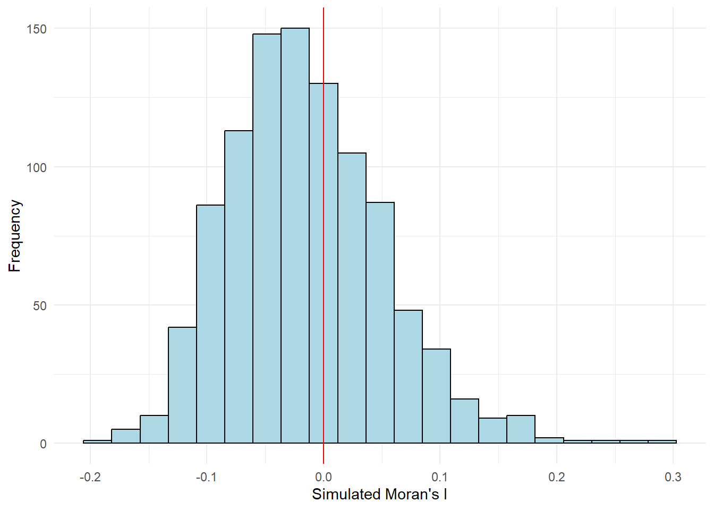
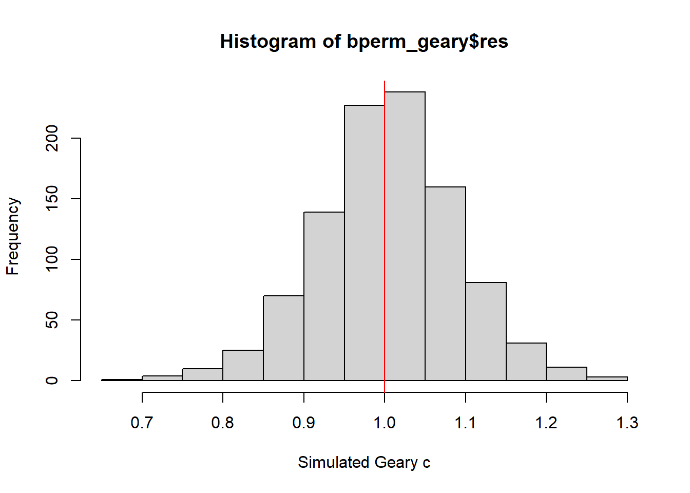
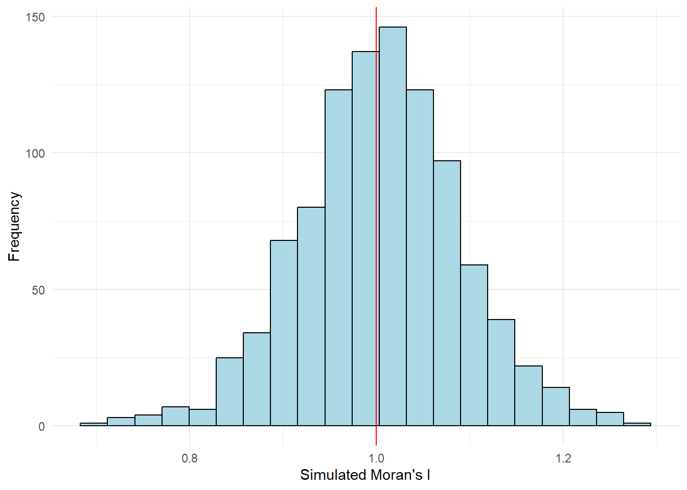

pacman::p_load(sf, spdep, tmap, tidyverse)Hands-on-Exercise 6: Global and Local Measures of Spatial Autocorrelation
1.0 Objectives
In this hands-on exercise, you will learn how to compute Global Measures of Spatial Autocorrelation (GMSA) by using spdep package. By the end to this hands-on exercise, you will be able to:
import geospatial data using appropriate function(s) of sf package,
import csv file using appropriate function of readr package,
perform relational join using appropriate join function of dplyr package,
compute Global Spatial Autocorrelation (GSA) statistics by using appropriate functions of spdep package,
plot Moran scatterplot,
compute and plot spatial correlogram using appropriate function of spdep package.
provide statistically correct interpretation of GSA statistics.
2.0 Importing Packages
sf
tidyverse
spdep
tmap
3.0 Importing Datasets into Environment
- geospatial (boundary)
hunan <- st_read(dsn = "data/geospatial",
layer = "Hunan")Reading layer `Hunan' from data source
`C:\marcus159260\IS415-GAA\hands-on-exercises\Hands-on_Ex06\data\geospatial'
using driver `ESRI Shapefile'
Simple feature collection with 88 features and 7 fields
Geometry type: POLYGON
Dimension: XY
Bounding box: xmin: 108.7831 ymin: 24.6342 xmax: 114.2544 ymax: 30.12812
Geodetic CRS: WGS 84- aspatial
hunan2012 <- read_csv("data/aspatial/Hunan_2012.csv")Rows: 88 Columns: 29
── Column specification ────────────────────────────────────────────────────────
Delimiter: ","
chr (2): County, City
dbl (27): avg_wage, deposite, FAI, Gov_Rev, Gov_Exp, GDP, GDPPC, GIO, Loan, ...
ℹ Use `spec()` to retrieve the full column specification for this data.
ℹ Specify the column types or set `show_col_types = FALSE` to quiet this message.4.0 Projection Transformation
st_crs(hunan)Coordinate Reference System:
User input: WGS 84
wkt:
GEOGCRS["WGS 84",
DATUM["World Geodetic System 1984",
ELLIPSOID["WGS 84",6378137,298.257223563,
LENGTHUNIT["metre",1]]],
PRIMEM["Greenwich",0,
ANGLEUNIT["degree",0.0174532925199433]],
CS[ellipsoidal,2],
AXIS["latitude",north,
ORDER[1],
ANGLEUNIT["degree",0.0174532925199433]],
AXIS["longitude",east,
ORDER[2],
ANGLEUNIT["degree",0.0174532925199433]],
ID["EPSG",4326]]st_crs(hunan2012)Coordinate Reference System: NA5.0 Data Wrangling
perform relational join
- join by common identifier: County
hunan <- left_join(hunan,hunan2012) %>%
select(1:4, 7, 15)Joining with `by = join_by(County)`6.0 Exploratory Spatial Data Analysis
Visualising Regional Development Indicator
- Now, we are going to prepare a basemap and a choropleth map showing the distribution of GDPPC 2012 by using
qtm()of tmap package.
- Now, we are going to prepare a basemap and a choropleth map showing the distribution of GDPPC 2012 by using
equal <- tm_shape(hunan) +
tm_fill("GDPPC",
n = 5,
style = "equal") +
tm_borders(alpha = 0.5) +
tm_layout(main.title = "Equal interval classification")
quantile <- tm_shape(hunan) +
tm_fill("GDPPC",
n = 5,
style = "quantile") +
tm_borders(alpha = 0.5) +
tm_layout(main.title = "Equal quantile classification")
tmap_arrange(equal,
quantile,
asp=1,
ncol=2)
7.0 Global Measures of Spatial Autocorrelation
compute global spatial autocorrelation statistics
perform spatial complete randomness test for global spatial autocorrelation.
7.1 Compute Contiguity Spatial Weights
First, construct spatial weights structure of the study area (contiguity weights matrices using poly2nb() from spdep package). Purpose: to define the neighborhood relationships between the geographical units (e.g county) in the study area.
Returns list of first-order neighbours using Queen criteria. default: queen = TRUE
wm_q -> weight matrix_queen
wm_q <- poly2nb(hunan, queen=TRUE)
summary(wm_q)Neighbour list object:
Number of regions: 88
Number of nonzero links: 448
Percentage nonzero weights: 5.785124
Average number of links: 5.090909
Link number distribution:
1 2 3 4 5 6 7 8 9 11
2 2 12 16 24 14 11 4 2 1
2 least connected regions:
30 65 with 1 link
1 most connected region:
85 with 11 linkstop row is number of neighbours
bottom row is the number of area units possessing the respective number of neighbours
7.2 Row-standardised weights matrix
Second, we will assign weights (equal weights (style=‘W’)) to each neighboring polygon. (1/no.of neighbours)
one drawback is that polygons along the edges of the study area will base their lagged (distance) values on fewer polygons thus potentially over- or under-estimating the true nature of the spatial autocorrelation in the data.
rswm_q <- nb2listw(wm_q,
style="W",
zero.policy = TRUE)
rswm_qCharacteristics of weights list object:
Neighbour list object:
Number of regions: 88
Number of nonzero links: 448
Percentage nonzero weights: 5.785124
Average number of links: 5.090909
Weights style: W
Weights constants summary:
n nn S0 S1 S2
W 88 7744 88 37.86334 365.9147
What can we learn from the code chunk above?
The input of
nb2listw()must be an object of class nb. The syntax of the function has two major arguments, namely style and zero.poly.style can take values “W”, “B”, “C”, “U”, “minmax” and “S”. B is the basic binary coding, W is row standardised (sums over all links to n), C is globally standardised (sums over all links to n), U is equal to C divided by the number of neighbours (sums over all links to unity), while S is the variance-stabilizing coding scheme proposed by Tiefelsdorf et al. 1999, p. 167-168 (sums over all links to n).
If zero policy is set to TRUE, weights vectors of zero length are inserted for regions without neighbour in the neighbours list. These will in turn generate lag values of zero, equivalent to the sum of products of the zero row t(rep(0, length=length(neighbours))) %*% x, for arbitrary numerical vector x of length length(neighbours). The spatially lagged value of x for the zero-neighbour region will then be zero, which may (or may not) be a sensible choice.
8.0 Global Measures of Spatial Autocorrelation: Moran’s I
Moran I is a statistical testing, using moran.test() from spdep package
8.1 Moran’s I test
moran.test(hunan$GDPPC,
listw=rswm_q,
zero.policy = TRUE,
na.action=na.omit)
Moran I test under randomisation
data: hunan$GDPPC
weights: rswm_q
Moran I statistic standard deviate = 4.7351, p-value = 1.095e-06
alternative hypothesis: greater
sample estimates:
Moran I statistic Expectation Variance
0.300749970 -0.011494253 0.004348351 - p-value: 1.095e-06 = 1.095 x 10^-6 (0.00000195)
8.2 Computing Monte Carlo Moran’s I
simulation = 1000
seed = 1234
bperm (permutation) - using moran.mc() from spdep, data: GDPPC
set.seed(1234)
bperm= moran.mc(hunan$GDPPC,
listw=rswm_q,
nsim=999,
zero.policy = TRUE,
na.action=na.omit)
bperm
Monte-Carlo simulation of Moran I
data: hunan$GDPPC
weights: rswm_q
number of simulations + 1: 1000
statistic = 0.30075, observed rank = 1000, p-value = 0.001
alternative hypothesis: greater8.3 Visualising Monte Carlo Moran’s I (using histogram)
#compute mean
mean(bperm$res[1:999])[1] -0.01504572cat('\n')#compute variance
var(bperm$res[1:999])[1] 0.004371574cat('\n')#summary bperm
summary(bperm$res[1:999]) Min. 1st Qu. Median Mean 3rd Qu. Max.
-0.18339 -0.06168 -0.02125 -0.01505 0.02611 0.27593 - create histogram using base graph
hist(bperm$res, #x
freq=TRUE, #y
breaks=20,
xlab="Simulated Moran's I")
abline(v=0,
col="red") 
- plotting histogram using ggplot2
#ggplot2
library(ggplot2)
# Assuming `bperm$res` is your data
data <- data.frame(simulated_morans_i = bperm$res)
ggplot(data, aes(x = simulated_morans_i)) +
geom_histogram(binwidth = (max(data$simulated_morans_i) - min(data$simulated_morans_i)) / 20,
color = "black", fill = "lightblue") + # Histogram
geom_vline(xintercept = 0, color = "red", linetype = "solid") + # Vertical line at x=0
labs(x = "Simulated Moran's I", y = "Frequency") + # Labels for x and y axis
theme_minimal() # Clean minimal theme
9.0 Global Measures of Spatial Autocorrelation: Geary’s C (alternative to Moran’s I)
9.1 Geary C’s test
geary.test(hunan$GDPPC, listw=rswm_q)
Geary C test under randomisation
data: hunan$GDPPC
weights: rswm_q
Geary C statistic standard deviate = 3.6108, p-value = 0.0001526
alternative hypothesis: Expectation greater than statistic
sample estimates:
Geary C statistic Expectation Variance
0.6907223 1.0000000 0.0073364 9.2 Computing Monte Carlo Geary’s C
simulations = 1000
seed = 1234
bperm (permutation) - using geary.mc() from spdep, data: GDPPC
set.seed(1234)
bperm_geary=geary.mc(hunan$GDPPC,
listw=rswm_q,
nsim=999)
bperm_geary
Monte-Carlo simulation of Geary C
data: hunan$GDPPC
weights: rswm_q
number of simulations + 1: 1000
statistic = 0.69072, observed rank = 1, p-value = 0.001
alternative hypothesis: greater9.3 Visualising Monte Carlo Geary’s C
basic statistics
#compute mean mean(bperm_geary$res[1:999])[1] 1.004402cat('\n')#compute variance var(bperm_geary$res[1:999])[1] 0.007436493cat('\n')#summary bperm summary(bperm_geary$res[1:999])Min. 1st Qu. Median Mean 3rd Qu. Max. 0.7142 0.9502 1.0052 1.0044 1.0595 1.2722plot histogram using base graph
hist(bperm_geary$res, freq=TRUE, breaks=20, xlab="Simulated Geary c") abline(v=1, col="red")
plot histogram using ggplot2
abline -> geom_vline
- v=1 <-> xintercept = 1
#ggplot2 library(ggplot2) # Assuming `bperm$res` is your data data <- data.frame(simulated_morans_i = bperm_geary$res) ggplot(data, aes(x = simulated_morans_i)) + geom_histogram(binwidth = (max(data$simulated_morans_i) - min(data$simulated_morans_i)) / 20, color = "black", fill = "lightblue") + # Histogram geom_vline(xintercept = 1, color = "red", linetype = "solid") + # Vertical line at x=0 labs(x = "Simulated Moran's I", y = "Frequency") + # Labels for x and y axis theme_minimal() # Clean minimal theme
10.0 Spatial Correlogram
- Spatial correlograms are great to examine patterns of spatial autocorrelation in your data or model residuals. They show how correlated are pairs of spatial observations when you increase the distance (lag) between them - they are plots of some index of autocorrelation (Moran’s I or Geary’s c) against distance.Although correlograms are not as fundamental as variograms (a keystone concept of geostatistics), they are very useful as an exploratory and descriptive tool. For this purpose they actually provide richer information than variograms.
10.1 Compute Moran’s I Spatial Correlogram
In the code chunk below, sp.correlogram() of spdep package is used to compute a 6-lag spatial correlogram of GDPPC. The global spatial autocorrelation used in Moran’s I. The plot() of base Graph is then used to plot the output.
MI_corr <- sp.correlogram(wm_q,
hunan$GDPPC,
order=6, #lag-value: 6
method="I",
style="W")
plot(MI_corr)
By plotting the output might not allow us to provide complete interpretation. This is because not all autocorrelation values are statistically significant. Hence, it is important for us to examine the full analysis report by printing out the analysis results as in the code chunk below.
print(MI_corr)Spatial correlogram for hunan$GDPPC
method: Moran's I
estimate expectation variance standard deviate Pr(I) two sided
1 (88) 0.3007500 -0.0114943 0.0043484 4.7351 2.189e-06 ***
2 (88) 0.2060084 -0.0114943 0.0020962 4.7505 2.029e-06 ***
3 (88) 0.0668273 -0.0114943 0.0014602 2.0496 0.040400 *
4 (88) 0.0299470 -0.0114943 0.0011717 1.2107 0.226015
5 (88) -0.1530471 -0.0114943 0.0012440 -4.0134 5.984e-05 ***
6 (88) -0.1187070 -0.0114943 0.0016791 -2.6164 0.008886 **
---
Signif. codes: 0 '***' 0.001 '**' 0.01 '*' 0.05 '.' 0.1 ' ' 110.2 Compute Geary’s C Spatial Correlogram and plot
In the code chunk below, sp.correlogram() of spdep package is used to compute a 6-lag spatial correlogram of GDPPC. The global spatial autocorrelation used in Geary’s C. The plot() of base Graph is then used to plot the output.
GC_corr <- sp.correlogram(wm_q,
hunan$GDPPC,
order=6,
method="C",
style="W")
plot(GC_corr)
print(GC_corr)Spatial correlogram for hunan$GDPPC
method: Geary's C
estimate expectation variance standard deviate Pr(I) two sided
1 (88) 0.6907223 1.0000000 0.0073364 -3.6108 0.0003052 ***
2 (88) 0.7630197 1.0000000 0.0049126 -3.3811 0.0007220 ***
3 (88) 0.9397299 1.0000000 0.0049005 -0.8610 0.3892612
4 (88) 1.0098462 1.0000000 0.0039631 0.1564 0.8757128
5 (88) 1.2008204 1.0000000 0.0035568 3.3673 0.0007592 ***
6 (88) 1.0773386 1.0000000 0.0058042 1.0151 0.3100407
---
Signif. codes: 0 '***' 0.001 '**' 0.01 '*' 0.05 '.' 0.1 ' ' 1